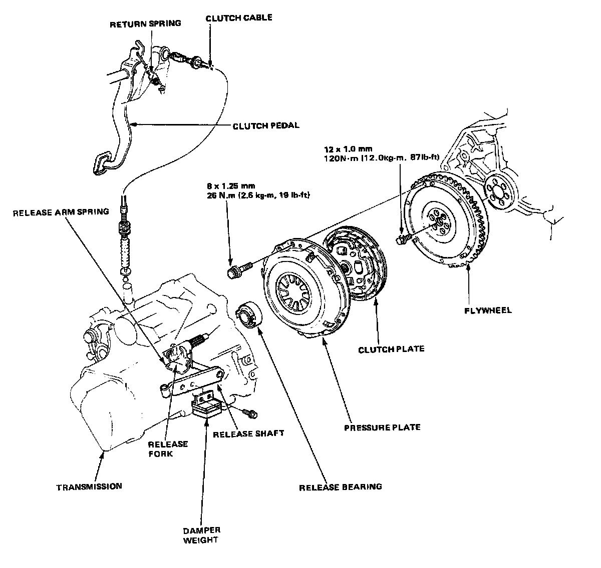
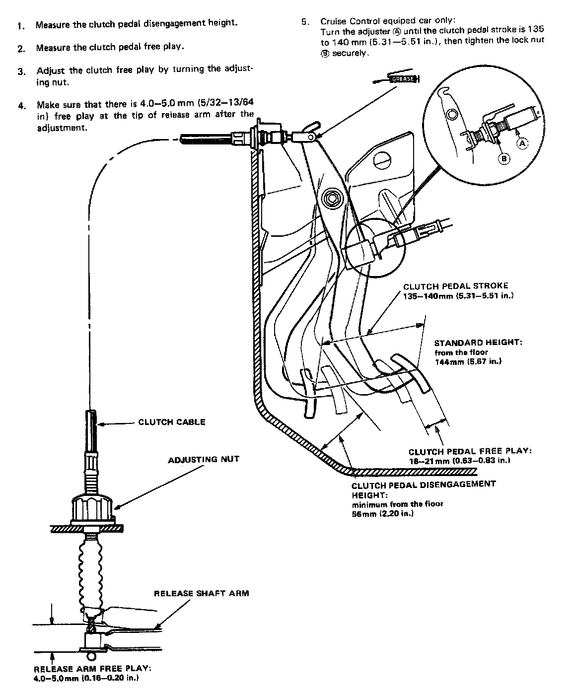
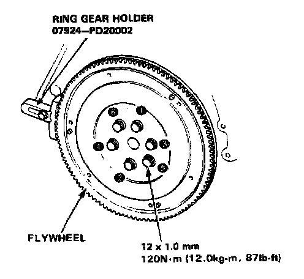
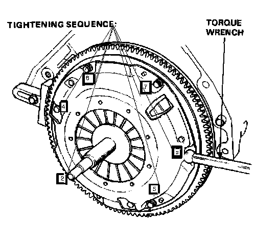
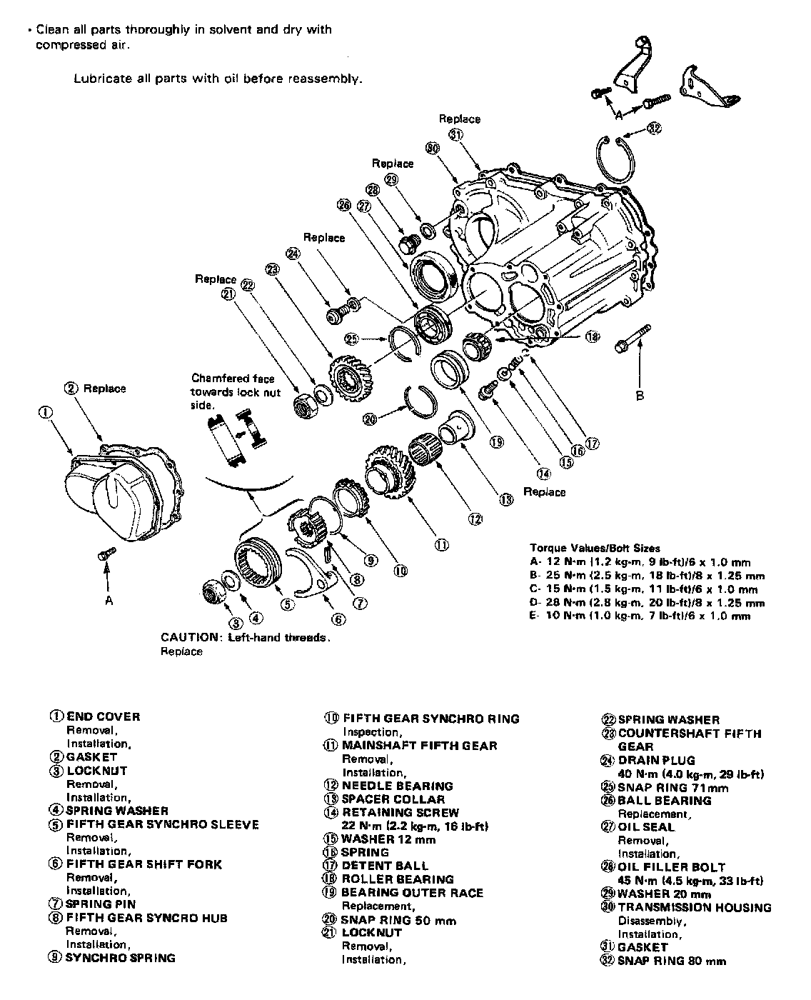
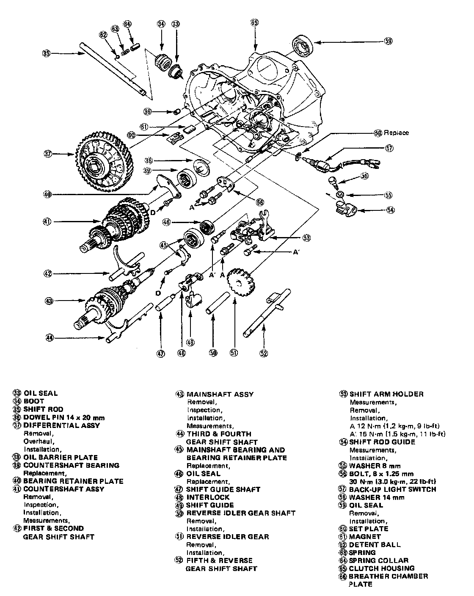
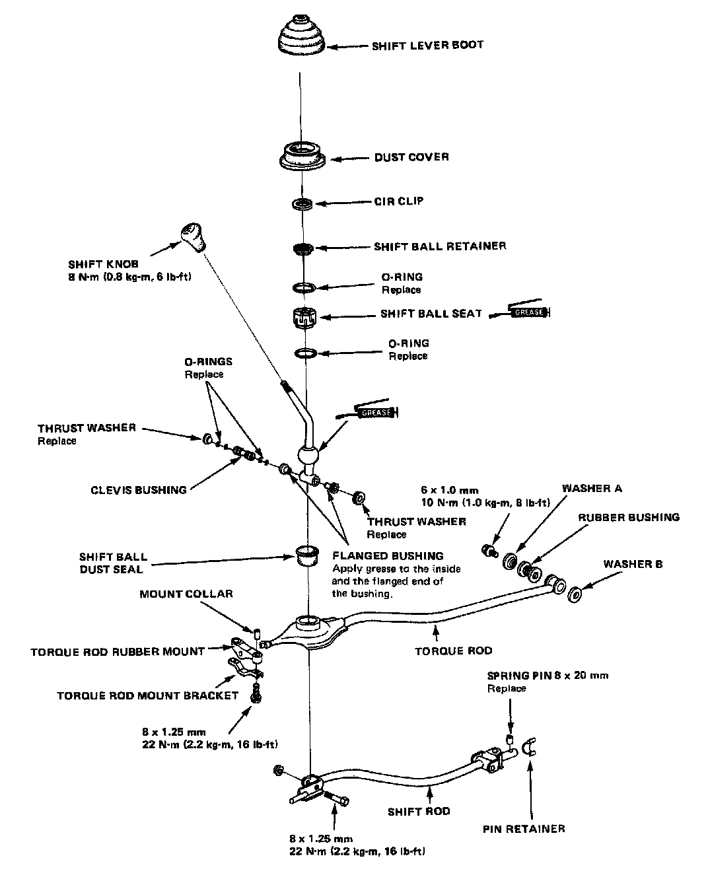

M/T Torque Data
CG 5-spd M/T, Clutch Torque:

CG 5-spd M/T, Clutch Pedal Torque/Adjustment:

CG 5-spd M/T, Flywheel Torque & Sequence:

CG 5-spd M/T, Pressure Plate Torque & Sequence:

CG 5-spd M/T, Assembly Torque 1 Of 2:

CG 5-spd M/T, Assembly Torque 2 Of 2:

CG 5-spd M/T, Gearshift Mechanism Torque:
